- Authors
- Pierre Alliez, Simon Giraudot, Clément Jamin, Florent Lafarge, Quentin Mérigot, Jocelyn Meyron, Laurent Saboret, Nader Salman, Shihao Wu
Introduction
This CGAL component implements methods to analyze and process 3D point sets. The input is an unorganized 3D point set, possibly with normal attributes (unoriented or oriented). The input point set can be analyzed to measure geometric properties such as average spacing between the points and their k nearest neighbors. It can be processed with functions devoted to the simplification, regularization, upsampling, outlier removal, smoothing, normal estimation and normal orientation. The processing of point sets is often needed in applications dealing with measurement data, such as surface reconstruction from laser scanned data (see Figure 72.1).
In the context of surface reconstruction we can position the elements of this component along the common surface reconstruction pipeline (Figure 72.2) which involves the following steps:
- Scanning and scan alignment to produce a set of points or points with normals (alignment is not covered in CGAL);
- Outlier removal;
- Simplification to reduce the number of input points;
- Smoothing to reduce noise in the input data;
- Normal estimation and orientation when the normals are not already provided by the acquisition device; and
- Surface reconstruction. Chapter Poisson Surface Reconstruction deals with surface reconstruction from point sets with normal attributes.
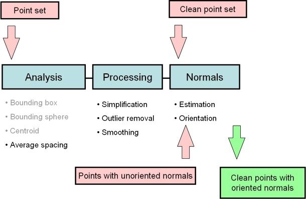
API
The algorithms of this component take as input parameters ranges of 3D points, or of 3D points with normals. They can be adapted to the user's data structures and make extensive use of named parameters and of property maps:
std::vector<PointVectorPair> points;
(points,
12,
CGAL::parameters::
point_map (Point_map()).
normal_map (Vector_map()));
This API was introduced in CGAL 4.12. Please refer to the dedicated section on how to upgrade from the deprecated API.
Named Parameters
Named parameters are used to deal with optional parameters. The page Named Parameters explains the rationale and API in general. The page Named Parameters for Point Set Processing describes their usage and provides a list of the parameters that are used in this package.
Property Maps
The property maps are used to access the point or normal information from the input data, so as to let the user decide upon the implementation of a point with normal. The latter can be represented as, e.g., a class derived from the CGAL 3D point, or as a std::pair<Point_3<K>, Vector_3<K>>, or as a boost::tuple<..,Point_3<K>, ..., Vector_3<K> >.
The following classes described in Chapter CGAL and Boost Property Maps provide property maps for the implementations of points with normals listed above:
Identity_property_map<Point_3> is the default value of the position property map expected by all functions in this component.
See below examples using pair and tuple property maps.
Users of this package may use other types to represent positions and normals if they implement the corresponding property maps.
Points and normals can even be stored in separate containers and accessed by their index, as any built-in vector is also a property map.
File Point_set_processing_3/grid_simplify_indices.cpp
#include <CGAL/Exact_predicates_inexact_constructions_kernel.h>
#include <CGAL/grid_simplify_point_set.h>
#include <CGAL/IO/read_xyz_points.h>
#include <CGAL/property_map.h>
#include <vector>
#include <fstream>
int main(int argc, char*argv[])
{
std::vector<Point> points;
std::vector<Vector> normals;
const char* fname = (argc>1)?argv[1]:"data/fin90_with_PCA_normals.xyz";
std::ifstream stream(fname);
Point p;
Vector v;
while(stream >> p >> v){
points.push_back(p);
normals.push_back(v);
}
std::cout << points.size() << " input points" << std::endl;
std::vector<std::size_t> indices(points.size());
for(std::size_t i = 0; i < points.size(); ++i){
indices[i] = i;
}
double cell_size = 0.05;
std::vector<std::size_t>::iterator end;
cell_size,
std::size_t k = end - indices.begin();
std::cerr << "Keep " << k << " of " << indices.size() << " indices" << std::endl;
{
std::vector<Point> tmp_points(k);
std::vector<Vector> tmp_normals(k);
for(std::size_t i=0; i<k; ++i){
tmp_points[i] = points[indices[i]];
tmp_normals[i] = normals[indices[i]];
}
points.swap(tmp_points);
normals.swap(tmp_normals);
}
std::cout << points.size() << " points after the simplification" << std::endl;
return EXIT_SUCCESS;
}
Upgrading from pre-CGAL 4.12 Deprecated API
The current API based on ranges and named parameters was introduced in CGAL 4.12. The old API that used pairs of iterators along with usual C++ parameters (with some default values and overloads to handle optional parameters) is deprecated.
- Warning
- The deprecated API will be removed in CGAL 4.14, so we recommend to update your code.
Translating your pre-CGAL 4.12 code using Point Set Processing to the new API is easy. For example, consider this code using the old API:
std::vector<PointVectorPair> points;
CGAL::jet_estimate_normals<Concurrency_tag>
(points.begin(), points.end(),
12);
The pair of iterators is replaced by a range and the optional parameters (than can be deduced automatically in simple cases) are moved to the end of the function in a single named parameter object (see Named Parameters). The code translated to the new API becomes:
std::vector<PointVectorPair> points;
CGAL::jet_estimate_normals<Concurrency_tag>
(points,
12,
Please refer to the Reference Manual for the detailed API of the Point Set Processing functions.
Input/Output
Points And Normals
CGAL provides functions to read and write sets of points or sets of points with normals from the following file formats:
- XYZ (ASCII file three point coordinates
x y z per line or three point coordinates and three normal vector coordinates x y z nx ny nz per line)
- OFF (Object File Format) [9]
- PLY (Polygon File Format) [10]
- LAS (Lidar Format). [1] This format does not handle normals and requires the LASlib library.
The following functions are available:
All of these functions (with the exception of the LAS format) can read and write either points alone or points with normals (depending on whether the normal_map is provided by the user or not).
Note that the PLY format handles both ASCII and binary formats. In addition, PLY and LAS are extensible formats that can embed additional properties. These can also be read by CGAL (see Section Points With Properties).
Example
The following example reads a point set from an input file and writes it to a file, both in the XYZ format. Positions and normals are stored in pairs and accessed through property maps.
File Point_set_processing_3/read_write_xyz_point_set_example.cpp
#include <CGAL/Exact_predicates_inexact_constructions_kernel.h>
#include <CGAL/property_map.h>
#include <CGAL/IO/read_xyz_points.h>
#include <CGAL/IO/write_xyz_points.h>
#include <utility>
#include <vector>
#include <fstream>
#include <iostream>
typedef std::pair<Point, Vector> Pwn;
int main(int argc, char*argv[])
{
const char* fname = (argc>1)?argv[1]:"data/oni.xyz";
std::vector<Pwn> points;
std::ifstream in(fname);
if (!in ||
in,std::back_inserter(points),
{
std::cerr << "Error: cannot read file " << fname << std::endl;
return EXIT_FAILURE;
}
std::ofstream out("oni_copy.xyz");
if (!out ||
out, points,
{
return EXIT_FAILURE;
}
return EXIT_SUCCESS;
}
Points With Properties
PLY files are designed to embed an arbitrary number of additional attributes. More specifically, point sets may contain visibility vectors, RGB colors, intensity, etc. As it is not possible to provide dedicated functions to every possible combination of PLY properties, CGAL provides a simple way to read PLY properties and store them in any structure the user needs. Handling of LAS files works similarly with the difference that the property names and types are fixed and defined by the LAS standard.
Functions read_ply_points_with_properties() and read_las_points_with_properties() allow the user to read any property needed. The user must provide a set of property handlers that are used to instantiate number types and complex objects from PLY/LAS properties. This handlers are either:
- a pair consisting of a property map and of a single PLY/LAS property descriptor
- a tuple consisting of a property map, a functor to construct the objects wanted and multiple PLY/LAS property descriptors
Output functions write_ply_points_with_properties() and write_las_points_with_properties() work similarly.
PLY Writing Example
The following example shows how to call write_ply_points_with_properties() to write a point set with points, RGB colors and intensity. Notice that in order to write a complex object, users need to provide an overload of CGAL::Output_rep.
File Point_set_processing_3/write_ply_points_example.cpp
#include <CGAL/Exact_predicates_inexact_constructions_kernel.h>
#include <CGAL/property_map.h>
#include <CGAL/IO/write_ply_points.h>
#include <utility>
#include <vector>
#include <fstream>
template< class F >
struct Output_rep< ::Color, F > {
const ::Color& c;
static const bool is_specialized = true;
Output_rep (const ::Color& c) : c(c)
{ }
std::ostream& operator() (std::ostream& out) const
{
out << int(c[0]) << " " << int(c[1]) << " " << int(c[2]) << " " << int(c[3]);
else
out.write(reinterpret_cast<const char*>(&c), sizeof(c));
return out;
}
};
}
int main(int, char**)
{
std::vector<PCI> points;
for (int i = 0; i < 10; ++ i)
points.push_back (CGAL::cpp11::make_tuple (Point (i / 10., i / 20., i / 30.),
CGAL::make_array ((unsigned char)(255 / (i + 1)),
(unsigned char)(192 / (i + 1)),
(unsigned char)(128 / (i + 1)),
(unsigned char)(64 / (i + 1))),
i));
std::ofstream f("out.ply");
(f, points,
std::make_tuple(Color_map(),
return EXIT_SUCCESS;
}
PLY Reading Example
The following example shows how to call read_ply_points_with_properties() to read a point set with points, normals, RGB colors and intensity and stores these attributes in a user-defined container.
File Point_set_processing_3/read_ply_points_with_colors_example.cpp
#include <CGAL/Exact_predicates_inexact_constructions_kernel.h>
#include <CGAL/property_map.h>
#include <CGAL/IO/read_ply_points.h>
#include <utility>
#include <vector>
#include <fstream>
int main(int argc, char*argv[])
{
const char* fname = (argc>1) ? argv[1] : "data/colors.ply";
std::vector<PNCI> points;
std::ifstream in(fname);
if (!in ||
(in,
std::back_inserter (points),
std::make_pair (Intensity_map(),
std::make_tuple (Color_map(),
))
{
std::cerr << "Error: cannot read file " << fname << std::endl;
return EXIT_FAILURE;
}
for (std::size_t i = 0; i < points.size (); ++ i)
{
const Point& p = get<0>(points[i]);
const Vector& n = get<1>(points[i]);
const Color& c = get<2>(points[i]);
int I = get<3>(points[i]);
std::cerr << "Point (" << p << ") with normal (" << n
<< "), color (" << int(c[0]) << " " << int(c[1]) << " " << int(c[2])
<< ") and intensity " << I << std::endl;
}
return EXIT_SUCCESS;
}
LAS Reading Example
The following example shows how to call read_las_points_with_properties() to read a point set with points and RGBI colors and stores these attributes in a user-defined container.
File Point_set_processing_3/read_las_example.cpp
#include <CGAL/Exact_predicates_inexact_constructions_kernel.h>
#include <CGAL/property_map.h>
#include <CGAL/IO/read_las_points.h>
#include <utility>
#include <vector>
#include <fstream>
typedef std::pair<Point, Color> PointWithColor;
int main(int argc, char*argv[])
{
const char* fname = (argc>1) ? argv[1] : "data/pig_points.las";
std::vector<PointWithColor> points;
std::ifstream in(fname, std::ios_base::binary);
if (!in ||
(in,
std::back_inserter (points),
std::make_tuple
CGAL::LAS_property::R(),
CGAL::LAS_property::G(),
CGAL::LAS_property::B(),
CGAL::LAS_property::I())))
{
std::cerr << "Error: cannot read file " << fname << std::endl;
return EXIT_FAILURE;
}
for (std::size_t i = 0; i < points.size(); ++ i)
std::cout << points[i].first << std::endl;
return EXIT_SUCCESS;
}
Average Spacing
Function compute_average_spacing() computes the average spacing of all input points to their k nearest neighbor points, k being specified by the user. As it provides an order of a point set density, this function is used downstream the surface reconstruction pipeline to automatically determine some parameters such as output mesh sizing for surface reconstruction.
Example
The following example reads a point set in the xyz format and computes the average spacing. Index, position and color are stored in a tuple and accessed through property maps.
File Point_set_processing_3/average_spacing_example.cpp
#include <CGAL/Exact_predicates_inexact_constructions_kernel.h>
#include <CGAL/compute_average_spacing.h>
#include <CGAL/IO/read_xyz_points.h>
#include <vector>
#include <fstream>
#include <boost/tuple/tuple.hpp>
typedef boost::tuple<int, Point, int, int, int> IndexedPointWithColorTuple;
#ifdef CGAL_LINKED_WITH_TBB
#else
#endif
int main(int argc, char*argv[])
{
const char* fname = (argc>1)?argv[1]:"data/sphere_20k.xyz";
std::vector<IndexedPointWithColorTuple> points;
std::ifstream stream(fname);
if (!stream ||
stream, std::back_inserter(points),
{
std::cerr << "Error: cannot read file " << fname << std::endl;
return EXIT_FAILURE;
}
for(unsigned int i = 0; i < points.size(); i++)
{
points[i].get<0>() = i;
points[i].get<2>() = 0;
points[i].get<3>() = 0;
points[i].get<4>() = 0;
}
const unsigned int nb_neighbors = 6;
FT average_spacing = CGAL::compute_average_spacing<Concurrency_tag>(
points, nb_neighbors,
std::cout << "Average spacing: " << average_spacing << std::endl;
return EXIT_SUCCESS;
}
Note that other functions such as centroid or bounding volumes are found in other CGAL components:
Automatic Scale Estimation
Point sets are often used to sample objects with a higher dimension, typically a curve in 2D or a surface in 3D. In such cases, finding the scale of the objet is crucial, that is to say finding the minimal number of points (or the minimal local range) such that the subset of points has the appearance of a curve in 2D or a surface in 3D [2].
CGAL provides 2 functions that automatically estimate the scale of a 2D point set sampling a curve or a 3D point set sampling a surface:
Functions such as jet_estimate_normals() or remove_outliers() require a K neighbor scale while others such as grid_simplify_point_set() require a range scale. vcm_estimate_normals() is an example of a function that accepts both.
In some specific cases, the scale of a point set might not be homogeneous (for example if the point set contains variable noise). CGAL also provides 2 functions that automatically estimate the scales of a point set at a set of user-defined query points:
The 4 functions presented here work both with 2D points and 3D points and they shouldn't be used if the point sets do not sample a curve in 2D or a surface in 3D.
Global Scale Example
The following example reads a 3D point set in the xyz format and:
- Estimates the K neighbor global scale
- Uses it to smooth the point set
- Estimates the range global scale
- Uses it to simplify the point set
File Point_set_processing_3/scale_estimation_example.cpp
#include <CGAL/Exact_predicates_inexact_constructions_kernel.h>
#include <CGAL/IO/read_xyz_points.h>
#include <CGAL/estimate_scale.h>
#include <CGAL/jet_smooth_point_set.h>
#include <CGAL/grid_simplify_point_set.h>
#include <CGAL/Timer.h>
#include <CGAL/Memory_sizer.h>
#include <vector>
#include <fstream>
#include <boost/tuple/tuple.hpp>
#ifdef CGAL_LINKED_WITH_TBB
#else
#endif
int main (int argc, char** argv)
{
const char* fname = (argc>1)?argv[1]:"data/sphere_20k.xyz";
CGAL::Timer task_timer;
std::vector<Point_3> points;
std::ifstream stream(fname);
if (!(stream
{
std::cerr << "Error: can't read input file" << std::endl;
return EXIT_FAILURE;
}
task_timer.start();
task_timer.stop();
CGAL::jet_smooth_point_set<Concurrency_tag>
(points, static_cast<unsigned int>(k_scale));
task_timer.start();
task_timer.stop();
points.end());
std::size_t memory = CGAL::Memory_sizer().virtual_size();
double time = task_timer.time();
std::cout << "Scales computed in " << time << " second(s) using "
<< (memory>>20) << " MiB of memory:" << std::endl;
std::cout << " * Global K scale: " << k_scale << std::endl;
std::cout << " * Global range scale: " << range_scale << std::endl;
return EXIT_SUCCESS;
}
Local Scales Example
This second example generates a 2D point set sampling a circle with variable noise. It then estimates the scale at 3 different query points in the domain.
File Point_set_processing_3/scale_estimation_2d_example.cpp
#include <CGAL/Exact_predicates_inexact_constructions_kernel.h>
#include <CGAL/estimate_scale.h>
#include <CGAL/IO/read_xyz_points.h>
#include <CGAL/Random.h>
#include <vector>
#include <fstream>
#include <boost/tuple/tuple.hpp>
int main (int, char**)
{
std::vector<Point_2> samples;
samples.reserve (100000);
for (std::size_t i = 0; i < 100000; ++ i)
{
FT theta = CGAL::get_default_random().get_double(0, 2. * CGAL_PI);
FT noise = 0.5 * (std::cos(theta) + 1.) * CGAL::get_default_random().get_double(0., 0.2);
int mult = (CGAL::get_default_random().get_bool() ? 1 : -1);
samples.push_back (Point_2 (std::cos(theta) * (1. + mult * noise * noise),
std::sin(theta) * (1. + mult * noise * noise)));
}
std::vector<Point_2> queries;
queries.reserve (3);
queries.push_back (Point_2 (-1., 0.));
queries.push_back (Point_2 (0., 1.));
queries.push_back (Point_2 (1., 0.));
std::vector<std::size_t> k_scales;
queries,
std::back_inserter (k_scales));
std::cerr << "K-Scales found:" << std::endl
<< " - On noise-free region: " << k_scales[0] << std::endl
<< " - On moderately noisy region: " << k_scales[1] << std::endl
<< " - On very noisy region: " << k_scales[2] << std::endl;
return EXIT_SUCCESS;
}
Outlier Removal
Function remove_outliers() deletes a user-specified fraction of outliers from an input point set. More specifically, it sorts the input points in increasing order of average squared distances to their k nearest neighbors and deletes the points with largest value.
Example
The following example reads a point set and removes 5% of the points. It uses the Identity_property_map<Point_3> property map (optional as it is the default position property map of all functions in this component.)
File Point_set_processing_3/remove_outliers_example.cpp
#include <CGAL/Exact_predicates_inexact_constructions_kernel.h>
#include <CGAL/property_map.h>
#include <CGAL/compute_average_spacing.h>
#include <CGAL/remove_outliers.h>
#include <CGAL/IO/read_xyz_points.h>
#include <vector>
#include <fstream>
#include <iostream>
int main(int argc, char*argv[])
{
const char* fname = (argc>1)?argv[1]:"data/oni.xyz";
std::vector<Point> points;
std::ifstream stream(fname);
if (!stream ||
{
std::cerr << "Error: cannot read file " << fname << std::endl;
return EXIT_FAILURE;
}
const int nb_neighbors = 24;
const double average_spacing = CGAL::compute_average_spacing<CGAL::Sequential_tag>
(points, nb_neighbors);
std::vector<Point>::iterator first_to_remove
(points,
nb_neighbors,
CGAL::parameters::threshold_percent (100.).
threshold_distance (2. * average_spacing));
std::cerr << (100. * std::distance(first_to_remove, points.end()) / (double)(points.size()))
<< "% of the points are considered outliers when using a distance threshold of "
<< 2. * average_spacing << std::endl;
const double removed_percentage = 5.0;
(points,
nb_neighbors,
CGAL::parameters::threshold_percent(removed_percentage).
threshold_distance(0.)),
points.end());
std::vector<Point>(points).swap(points);
return EXIT_SUCCESS;
}
Simplification
Four simplification functions are devised to reduce an input point set.
Function random_simplify_point_set() randomly deletes a user-specified fraction of points from the input point set. This algorithm is fast.
Function grid_simplify_point_set() considers a regular grid covering the bounding box of the input point set, and clusters all points sharing the same cell of the grid by picking as representant one arbitrarily chosen point. This algorithm is slower than random_simplify_point_set().
Function hierarchy_simplify_point_set() provides an adaptive simplification of the point set through local clusters [8]. The size of the clusters is either directly selected by the user or it automatically adapts to the local variation of the point set.
Function wlop_simplify_and_regularize_point_set() not only simplifies, but also regularizes downsampled points. This is an implementation of the Weighted Locally Optimal Projection (WLOP) algorithm [4].
Grid Simplification Example
The following example reads a point set and simplifies it by clustering.
File Point_set_processing_3/grid_simplification_example.cpp
#include <CGAL/Exact_predicates_inexact_constructions_kernel.h>
#include <CGAL/grid_simplify_point_set.h>
#include <CGAL/IO/read_xyz_points.h>
#include <vector>
#include <fstream>
int main(int argc, char*argv[])
{
std::vector<Point> points;
const char* fname = (argc>1)?argv[1]:"data/oni.xyz";
std::ifstream stream(fname);
if (!stream ||
{
std::cerr << "Error: cannot read file " << fname << std::endl;
return EXIT_FAILURE;
}
double cell_size = 0.001;
points.end());
std::vector<Point>(points).swap(points);
return EXIT_SUCCESS;
}
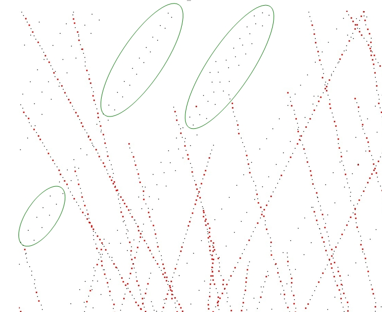
Hierarchy Simplification Example
The following example reads a point set and produces a set of clusters.
File Point_set_processing_3/hierarchy_simplification_example.cpp
#include <CGAL/Exact_predicates_inexact_constructions_kernel.h>
#include <CGAL/hierarchy_simplify_point_set.h>
#include <CGAL/IO/read_xyz_points.h>
#include <CGAL/IO/write_xyz_points.h>
#include <CGAL/Timer.h>
#include <CGAL/Memory_sizer.h>
#include <vector>
#include <fstream>
int main(int argc, char*argv[])
{
std::vector<Point> points;
const char* fname = (argc>1)?argv[1]:"data/oni.xyz";
std::ifstream stream(fname);
if (!stream ||
{
std::cerr << "Error: cannot read file " << fname << std::endl;
return EXIT_FAILURE;
}
std::cout << "Read " << points.size () << " point(s)" << std::endl;
CGAL::Timer task_timer; task_timer.start();
CGAL::parameters::size(100).
maximum_variation(0.01)),
points.end ());
std::size_t memory = CGAL::Memory_sizer().virtual_size();
std::cout << points.size () << " point(s) kept, computed in "
<< task_timer.time() << " seconds, "
<< (memory>>20) << " Mib allocated." << std::endl;
std::ofstream f ("out.xyz");
return EXIT_SUCCESS;
}
Parameter: size
The hierarchy simplification algorithm recursively split the point set in two until each cluster's size is less than the parameter size.
Parameter: var_max
In addition to the size parameter, a variation parameter allows to increase simplification in monotoneous regions. For each cluster, a surface variation measure is computed using the sorted eigenvalues of the covariance matrix:
\[ \sigma(p) = \frac{\lambda_0}{\lambda_0 + \lambda_1 + \lambda_2}. \]
This function goes from \(0\) if the cluster is coplanar to \(1/3\) if it is fully isotropic. If a cluster's variation is above var_max, it is split. If var_max is equal to \(1/3\), this parameter has no effect and the clustering is regular on the whole point set.
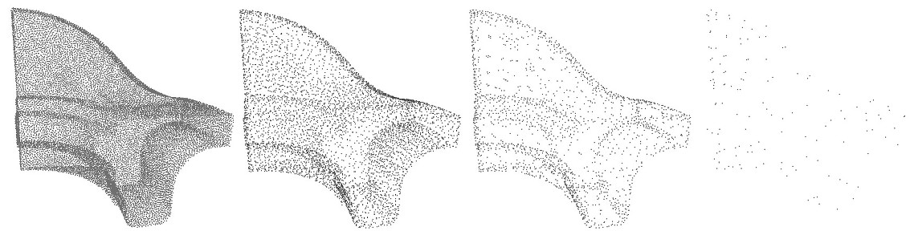
WLOP Simplification Example
The following example reads a point set, simplifies and regularizes it by WLOP.
File Point_set_processing_3/wlop_simplify_and_regularize_point_set_example.cpp
#include <CGAL/Simple_cartesian.h>
#include <CGAL/wlop_simplify_and_regularize_point_set.h>
#include <CGAL/IO/read_xyz_points.h>
#include <CGAL/IO/write_xyz_points.h>
#include <vector>
#include <fstream>
#include <iostream>
#ifdef CGAL_LINKED_WITH_TBB
#else
#endif
int main(int argc, char** argv)
{
const char* input_filename = (argc>1)?argv[1]:"data/sphere_20k.xyz";
const char* output_filename = (argc>2)?argv[2]:"data/sphere_20k_WLOPED.xyz";
std::vector<Point> points;
std::ifstream stream(input_filename);
{
std::cerr << "Error: cannot read file " << input_filename << std::endl;
return EXIT_FAILURE;
}
std::vector<Point> output;
const double retain_percentage = 2;
const double neighbor_radius = 0.5;
CGAL::wlop_simplify_and_regularize_point_set<Concurrency_tag>
(points, std::back_inserter(output),
CGAL::parameters::select_percentage(retain_percentage).
neighbor_radius (neighbor_radius));
std::ofstream out(output_filename);
out, output))
{
return EXIT_FAILURE;
}
return EXIT_SUCCESS;
}
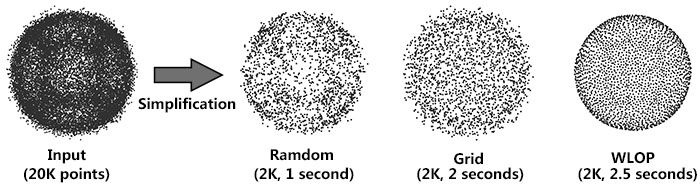
Parameter: require_uniform_sampling
Computing density weights for each point is an optional preprocessing. For example, as shown in the following figure, when require_uniform_sampling is set to false, WLOP preserves the intrinsic non-uniform sampling of the original points; if require_uniform_sampling is set to true, WLOP is resilient to non-uniform sampling and generates sample points with more uniform distribution, at the expense of computational time.
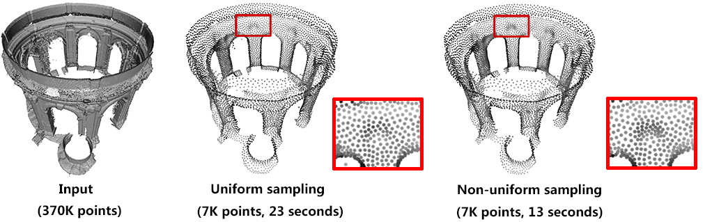
Parameter: neighbor_radius
Usually, the neighborhood of sample points should include at least two rings of neighboring sample points. Using a small neighborhood size may not be able to generate regularized result, while using big neighborhood size will make the sample points shrink into the interior of the local surface (under-fitting). The function will use a neighborhood size estimation if this parameter value is set to default or smaller that zero.
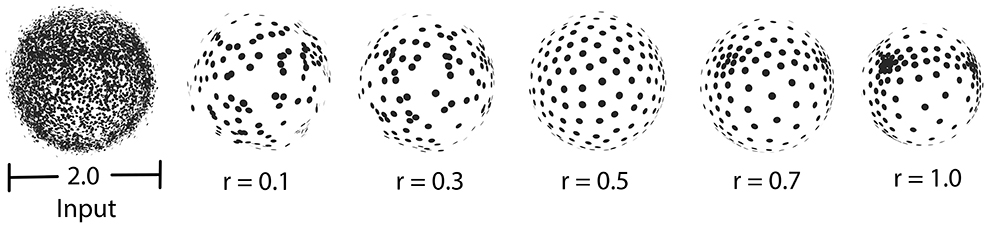
Parallel Performance
A parallel version of WLOP is provided and requires the executable to be linked against the Intel TBB library. To control the number of threads used, the user may use the tbb::task_scheduler_init class. See the TBB documentation for more details. We provide below a speed-up chart generated using the parallel version of the WLOP algorithm. The machine used is a PC running Windows 7 64-bits with a 4-core i7-47.nosp@m.00HQ.nosp@m.@2.40.nosp@m.GHz CPU with 8GB of RAM.
Smoothing
Two smoothing functions are devised to smooth an input point set.
Function jet_smooth_point_set() smooths the input point set by projecting each point onto a smooth parametric surface patch (so-called jet surface) fitted over its k nearest neighbors.
Function bilateral_smooth_point_set() smooths the input point set by iteratively projecting each point onto the implicit surface patch fitted over its k nearest neighbors. Bilateral projection preserves sharp features according to the normal (gradient) information. Normals are thus required as input. For more details, see section 4 of [5].
Jet Smoothing Example
The following example generates a set of 9 points close to the xy plane and smooths them using 8 nearest neighbors:
File Point_set_processing_3/jet_smoothing_example.cpp
#include <CGAL/Exact_predicates_inexact_constructions_kernel.h>
#include <CGAL/jet_smooth_point_set.h>
#include <vector>
#ifdef CGAL_LINKED_WITH_TBB
#else
#endif
int main(void)
{
std::vector<Point> points;
points.push_back(Point( 0.0, 0.0, 0.001));
points.push_back(Point(-0.1,-0.1, 0.002));
points.push_back(Point(-0.1,-0.2, 0.001));
points.push_back(Point(-0.1, 0.1, 0.002));
points.push_back(Point( 0.1,-0.1, 0.000));
points.push_back(Point( 0.1, 0.2, 0.001));
points.push_back(Point( 0.2, 0.0, 0.002));
points.push_back(Point( 0.2, 0.1, 0.000));
points.push_back(Point( 0.0,-0.1, 0.001));
const unsigned int nb_neighbors = 8;
CGAL::jet_smooth_point_set<Concurrency_tag>(points, nb_neighbors);
return EXIT_SUCCESS;
}
Bilateral Smoothing Example
The following example reads a set of points with normals and smooths them via bilateral smoothing:
File Point_set_processing_3/bilateral_smooth_point_set_example.cpp
#include <CGAL/Simple_cartesian.h>
#include <CGAL/property_map.h>
#include <CGAL/IO/read_xyz_points.h>
#include <CGAL/IO/write_xyz_points.h>
#include <CGAL/bilateral_smooth_point_set.h>
#include <CGAL/tags.h>
#include <utility>
#include <fstream>
typedef std::pair<Point, Vector> PointVectorPair;
#ifdef CGAL_LINKED_WITH_TBB
#else
#endif
int main(int argc, char*argv[])
{
const char* input_filename = (argc>1)?argv[1]:"data/fin90_with_PCA_normals.xyz";
const char* output_filename = (argc>2)?argv[2]:"data/fin90_with_PCA_normals_bilateral_smoothed.xyz";
std::vector<PointVectorPair> points;
std::ifstream stream(input_filename);
if (!stream ||
std::back_inserter(points),
{
std::cerr << "Error: cannot read file " << input_filename << std::endl;
return EXIT_FAILURE;
}
int k = 120;
double sharpness_angle = 25;
int iter_number = 3;
for (int i = 0; i < iter_number; ++i)
{
CGAL::bilateral_smooth_point_set <Concurrency_tag>(
points,
k,
sharpness_angle (sharpness_angle));
}
std::ofstream out(output_filename);
if (!out ||
out, points,
{
return EXIT_FAILURE;
}
return EXIT_SUCCESS;
}
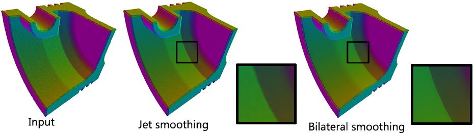
Parallel
Performance: A parallel version of bilateral smoothing is provided and requires the executable to be linked against the Intel TBB library. The number of threads used is controlled through the tbb::task_scheduler_init class. See the TBB documentation for more details. We provide below a speed-up chart generated using the parallel version of the bilateral smoothing algorithm. The machine used is a PC running Windows 7 64-bits with a 4-core i7-47.nosp@m.00HQ.nosp@m.@2.40.nosp@m.GHz CPU with 8GB of RAM.
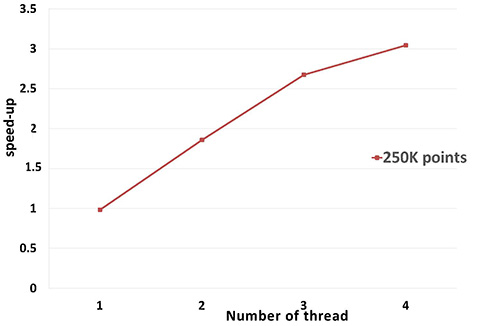
Normal Estimation
Assuming a point set sampled over an inferred surface S, two functions provide an estimate of the normal to S at each point. The result is an unoriented normal vector for each input point.
Function jet_estimate_normals() estimates the normal direction at each point from the input set by fitting a jet surface over its k nearest neighbors. The default jet is a quadric surface. This algorithm is well suited to point sets scattered over curved surfaces.
Function pca_estimate_normals() estimates the normal direction at each point from the set by linear least squares fitting of a plane over its k nearest neighbors. This algorithm is simpler and faster than jet_estimate_normals().
Function vcm_estimate_normals() estimates the normal direction at each point from the set by using the Voronoi Covariance Measure of the point set. This algorithm is more complex and slower than the previous algorithms. It is based on the article [7].
Normal Orientation
Function mst_orient_normals() orients the normals of a set of points with unoriented normals using the method described by Hoppe et al. in Surface reconstruction from unorganized points [3]. More specifically, this method constructs a Riemannian graph over the input points (the graph of the k nearest neighbor points) and propagates a seed normal orientation within a minimum spanning tree computed over this graph. The result is an oriented normal vector for each input unoriented normal, except for the normals which cannot be successfully oriented.
Example
The following example reads a point set from a file, estimates the normals through PCA over the 6 nearest neighbors and orients the normals:
File Point_set_processing_3/normals_example.cpp
#include <CGAL/Exact_predicates_inexact_constructions_kernel.h>
#include <CGAL/pca_estimate_normals.h>
#include <CGAL/mst_orient_normals.h>
#include <CGAL/property_map.h>
#include <CGAL/IO/read_xyz_points.h>
#include <utility>
#include <list>
#include <fstream>
typedef std::pair<Point, Vector> PointVectorPair;
#ifdef CGAL_LINKED_WITH_TBB
#else
#endif
int main(int argc, char*argv[])
{
const char* fname = (argc>1)?argv[1]:"data/sphere_1k.xyz";
std::list<PointVectorPair> points;
std::ifstream stream(fname);
if (!stream ||
std::back_inserter(points),
{
std::cerr << "Error: cannot read file " << fname<< std::endl;
return EXIT_FAILURE;
}
const int nb_neighbors = 18;
CGAL::pca_estimate_normals<Concurrency_tag>
(points, nb_neighbors,
std::list<PointVectorPair>::iterator unoriented_points_begin =
points.erase(unoriented_points_begin, points.end());
return EXIT_SUCCESS;
}
Upsampling
The function edge_aware_upsample_point_set() generates a denser point set from an input point set. This has applications in point-based rendering, hole filling, and sparse surface reconstruction. The algorithm can progressively upsample the point set while approaching the edge singularities. See [5] for more details.
Example
The following example reads a point set from a file, upsamples it to get a denser result.
File Point_set_processing_3/edge_aware_upsample_point_set_example.cpp
#include <CGAL/Simple_cartesian.h>
#include <CGAL/edge_aware_upsample_point_set.h>
#include <CGAL/IO/read_xyz_points.h>
#include <CGAL/IO/write_xyz_points.h>
#include <vector>
#include <fstream>
typedef std::pair<Point, Vector> PointVectorPair;
#ifdef CGAL_LINKED_WITH_TBB
#else
#endif
int main(int argc, char* argv[])
{
const char* input_filename = (argc>1)?argv[1]:"data/before_upsample.xyz";
const char* output_filename = (argc>2)?argv[2]:"data/before_upsample_UPSAMPLED.xyz";
std::vector<PointVectorPair> points;
std::ifstream stream(input_filename);
if (!stream ||
std::back_inserter(points),
{
std::cerr << "Error: cannot read file " << input_filename << std::endl;
return EXIT_FAILURE;
}
const double sharpness_angle = 25;
const double edge_sensitivity = 0;
const double neighbor_radius = 0.25;
const std::size_t number_of_output_points = points.size() * 4;
CGAL::edge_aware_upsample_point_set<Concurrency_tag>(
points,
std::back_inserter(points),
sharpness_angle(sharpness_angle).
edge_sensitivity(edge_sensitivity).
neighbor_radius(neighbor_radius).
number_of_output_points(number_of_output_points));
std::ofstream out(output_filename);
if (!out ||
out, points,
{
return EXIT_FAILURE;
}
return EXIT_SUCCESS;
}
Parameter: edge_sensitivity
This parameter controls where the new points are inserted. Larger values of edge-sensitivity give higher priority to inserting points along the sharp features. For example, as shown in the following figure, high value is preferable when one wants to insert more points on sharp features, where the local gradient is high, e.g., darts, cusps, creases and corners. In contrast, points are evenly inserted when edge_sensitivity is set to 0. The range of possible value is [0, 1].
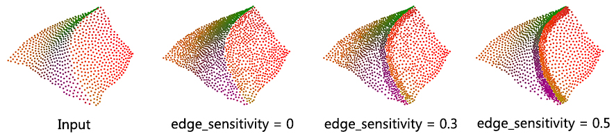
Parameter: sharpness_angle
This parameter controls the preservation of sharp features.
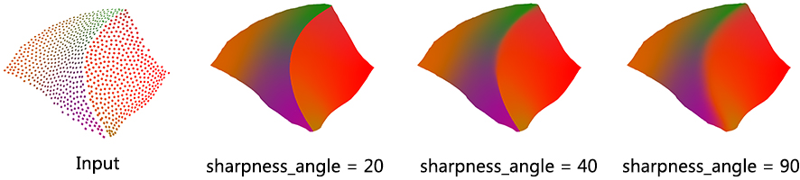
Parameter: neighbor_radius
Usually, the neighborhood of sample points should include at least one ring of neighboring sample points. Using small neighborhood size may not be able to insert new points. Using big neighborhood size can fill small holes, but points inserted on the edges could be irregular. The function will use a neigbhorhood size estimation if this parameter value is set to default or smaller than zero.
Feature Edges Estimation
Function vcm_is_on_feature_edge() indicates if a points belong to a feature edges of the point set using its Voronoi Covariance Measure. It is based on the article [7].
It first computes the VCM of the points set using compute_vcm(). Then, it estimates which points belong to a sharp edge by testing if a ratio of eigenvalues is greater than a given threshold.
Example
The following example reads a point set from a file, estimates the points that are on sharp edges:
File Point_set_processing_3/edges_example.cpp
#include <CGAL/Exact_predicates_inexact_constructions_kernel.h>
#include <CGAL/vcm_estimate_edges.h>
#include <CGAL/property_map.h>
#include <CGAL/IO/read_off_points.h>
#include <utility>
#include <vector>
#include <fstream>
#include <boost/foreach.hpp>
typedef std::pair<Point, Vector> PointVectorPair;
typedef std::vector<PointVectorPair> PointList;
int main (int , char**) {
std::list<PointVectorPair> points;
std::ifstream stream("data/fandisk.off");
if (!stream ||
std::back_inserter(points),
{
std::cerr << "Error: cannot read file data/fandisk.off" << std::endl;
return EXIT_FAILURE;
}
double R = 0.2,
r = 0.1;
std::vector<Covariance> cov;
CGAL::parameters::point_map (point_map).geom_traits (Kernel()));
double threshold = 0.16;
std::ofstream output("points_on_edges.xyz");
int i = 0;
BOOST_FOREACH(const PointVectorPair& p, points)
{
output << p.first << "\n";
++i;
}
return 0;
}
Structuring
The function structure_point_set() generates a structured version of the input point set assigned to a set of planes. Such an input can be produced by a shape detection algorithm (see Point Set Shape Detection). Point set structuring is based on the article [6].
- Planes: inliers of each detected plane are replaced by sets of noise-free points sampled at the vertices of a regular grid: this is achieved by filling an occupancy grid aligned on the principal components of the inlier sets with a spacing lower than \(\sqrt{2}\) times the user-defined tolerance.
- Creases: adjacencies between 2 planes are detected and regularly resampled on an occupancy array along the edge with a spacing equal to twice the user-defined tolerance.
- Corners: 3-cycles are detected from the primitive adjacency graph and sampled using the exact intersection point of the 3 planes (provided it exists and remains in the given tolerance). These corners are also locally clustered to former corners of degree higher than 3.
This algorithm is well suited to point sets sampled on surfaces with planar sections and sharp edges.
Structure information of points can be used to perform feature preserving reconstruction (see Advancing Front Surface Reconstruction for example). More specifically, the class storing a point set with structure provides the user with a method Point_set_with_structure::facet_coherence() that estimates if a triplet of points form a coherent facet.
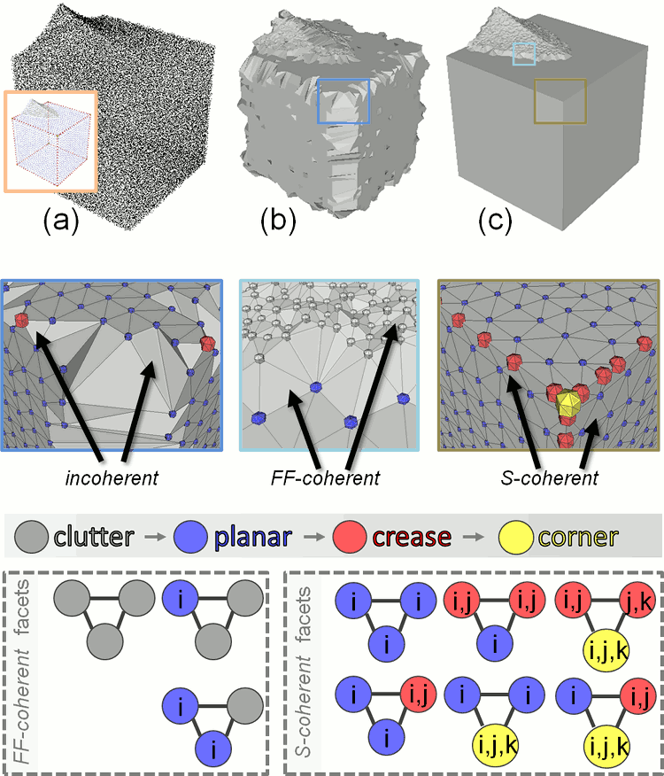
Example
The following example applies shape detection followed by structuring to a point set:
File Point_set_processing_3/structuring_example.cpp
#include <CGAL/Exact_predicates_inexact_constructions_kernel.h>
#include <CGAL/IO/read_xyz_points.h>
#include <CGAL/IO/write_xyz_points.h>
#include <CGAL/Point_with_normal_3.h>
#include <CGAL/property_map.h>
#include <CGAL/structure_point_set.h>
#include <iostream>
#include <fstream>
typedef std::pair<Kernel::Point_3, Kernel::Vector_3> Point_with_normal;
typedef std::vector<Point_with_normal> Pwn_vector;
<Kernel, Pwn_vector, Point_map, Normal_map> Traits;
int main (int argc, char** argv)
{
Pwn_vector points;
std::ifstream stream(argc>1 ? argv[1] : "data/cube.pwn");
if (!stream ||
std::back_inserter(points),
CGAL::parameters::point_map(Point_map()).
normal_map(Normal_map())))
{
std::cerr << "Error: cannot read file cube.pwn" << std::endl;
return EXIT_FAILURE;
}
std::cerr << points.size() << " point(s) read." << std::endl;
Efficient_ransac ransac;
ransac.set_input(points);
ransac.add_shape_factory<Plane>();
ransac.detect();
Efficient_ransac::Plane_range planes = ransac.planes();
Pwn_vector structured_pts;
planes,
std::back_inserter (structured_pts),
0.015,
CGAL::parameters::point_map (Point_map()).
normal_map (Normal_map()).
std::cerr << structured_pts.size ()
<< " structured point(s) generated." << std::endl;
std::ofstream out ("out.pwn");
CGAL::parameters::point_map(Point_map()).normal_map(Normal_map()));
out.close();
return EXIT_SUCCESS;
}
Callbacks
Several functions of this package provide a callback mechanism that enables the user to track the progress of the algorithms and to interrupt them if needed. A callback, in this package, is an instance of CGAL::cpp11::function<bool(double)> that takes the advancement as a parameter (between 0. when the algorithm begins to 1. when the algorithm is completed) and that returns true if the algorithm should carry on, false otherwise. It is passed as a named parameter with an empty function as default.
Algorithms that support this mechanism are detailed in the Reference Manual, along with the effect that an early interruption has on the output.
Example
The following example defines a callback that displays the name of the current algorithm along with the progress (as a percentage) updated every \(1/10th\) of a second. While the algorithm is running, the console output will typically look like this:
Computing average spacing: 100%
Grid simplification: 100%
Jet smoothing: 54%
Thanks to the carriage return character \r, the lines are overwritten and the user sees the percentage increasing on each line.
File Point_set_processing_3/callback_example.cpp
#include <CGAL/Exact_predicates_inexact_constructions_kernel.h>
#include <CGAL/point_generators_3.h>
#include <CGAL/Real_timer.h>
#include <CGAL/compute_average_spacing.h>
#include <CGAL/grid_simplify_point_set.h>
#include <CGAL/jet_smooth_point_set.h>
#include <vector>
#include <fstream>
typedef CGAL::Random_points_on_sphere_3<Point> Generator;
#ifdef CGAL_LINKED_WITH_TBB
#else
#endif
struct Progress_to_std_cerr_callback
{
mutable std::size_t nb;
CGAL::Real_timer timer;
double t_start;
mutable double t_latest;
const std::string name;
Progress_to_std_cerr_callback (const char* name)
: name (name)
{
timer.start();
t_start = timer.time();
t_latest = t_start;
}
bool operator()(double advancement) const
{
++ nb;
if (advancement != 1 && nb % 10000 != 0)
return true;
double t = timer.time();
if (advancement == 1 || (t - t_latest) > 0.1)
{
std::cerr << "\r"
<< name << ": " << int(advancement * 100) << "%";
if (advancement == 1)
std::cerr << std::endl;
t_latest = t;
}
return true;
}
};
int main ()
{
std::vector<Point> points;
points.reserve (1000000);
Generator generator(100.);
FT average_spacing = CGAL::compute_average_spacing<Concurrency_tag>
(points, 6,
CGAL::parameters::callback
(Progress_to_std_cerr_callback("Computing average spacing")));
(points, 2. * average_spacing,
CGAL::parameters::callback
(Progress_to_std_cerr_callback("Grid simplification"))),
points.end());
CGAL::jet_smooth_point_set<Concurrency_tag>
(points, 6,
CGAL::parameters::callback
(Progress_to_std_cerr_callback("Jet smoothing")));
return EXIT_SUCCESS;
}
Implementation History
Pierre Alliez and Laurent Saboret contributed the initial component. Nader Salman contributed the grid simplification. Started from GSoC'2013, three new algorithms were implemented by Shihao Wu and Clément Jamin: WLOP, bilateral smoothing and upsampling. Started from GSoC'2014, Jocelyn Meyron with the help of Quentin Mérigot introduced the computation of the Voronoi covarience measure of a point set, as well as the normal and feature edge estimation functions based on it. Florent Lafarge with the help of Simon Giraudot contributed the point set structuring algorithm.


 1.8.13
1.8.13